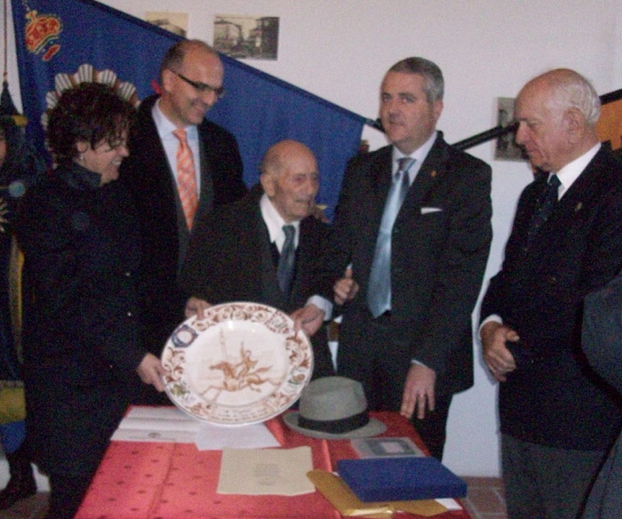
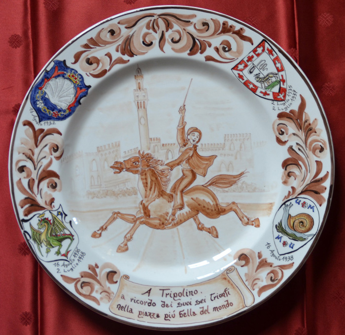
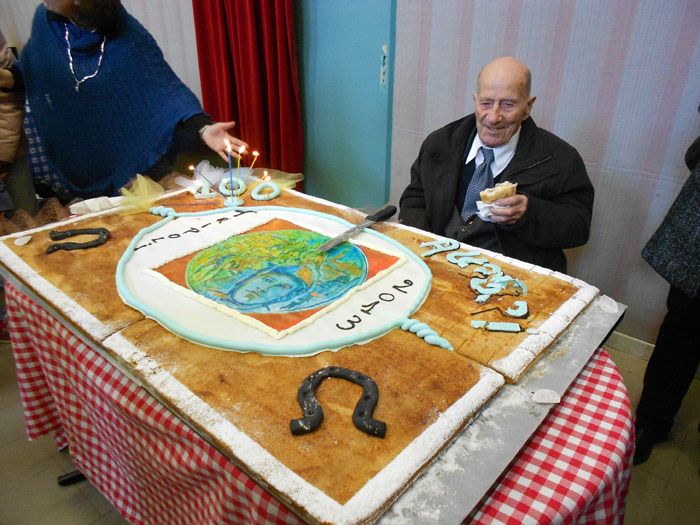

I FESTEGGIAMENTI PER I 100 ANNI DI TRIPOLINO


la scheda di Tripolino



Il piatto donato dalle 4 contrade nelle quali aveva vinto

La grande torta
E’ arrivato a Palazzo Moretti come meglio sapeva fare: a cavallo, anche se di una 500, in trionfo tra la sua gente, tra quelle persone delle più svariate generazioni che da quasi un secolo hanno seguito le sue gesta ed hanno ascoltato i suoi racconti di ritorno dalle Piazze di Siena e Arezzo.
Semplicemente Tripolino, un uomo che ha sciolto il cuore di tutti coloro che erano presenti alla dovutissima cerimonia organizzata da Roberto Parnetti, perché con quel sorriso di sempre e quegli occhi un po’ lucidi ha cercato fin dal primo momento di trasmettere una parola sola: grazie.
L’arrivo di Tripoli è stato accolto dalle chiarine e dal rullo dei tamburi del Gruppo Musici della Giostra che lo hanno aspettato davanti al palazzo e fin su l’entrata nella sala storica, momento trionfale che solo in pochi avranno mai la fortuna di vivere.
Perché il privilegio più grande, neanche a dirlo, è stato quello di avere assieme, tra le mura di quella fortunata sala di Pozzuolo, sia la Giostra del Saracino che il Palio di Siena, cosa più unica che rara. La prima festa era rappresentata dal presidente dell’Istituzione Giostra Angiolo Agnolucci, accompagnato dai Rettori dei Quartieri e dai Vessiliiferi recanti gli emblemi; la seconda dai Priori delle Contrade per le quali Tripoli ha vinto il Palio, ovvero Paolo Neri per la Nobile Contrada del Nicchio, Laura Bonelli per la Contrada del Drago, Andrea Viviani per la Contrada della Lupa e Senio Corsi per la Contrada della Chiocciola. Altro privilegio, inoltre, non poteva essere che la presenza delle bandiere di queste realtà che solo in casi eccezionali vengono portate fuori dalle mura di Siena: difficilmente si potranno rivedere quei drappi lontani dai palazzi di via dei Pispini, di via Giacomo Matteotti, di via Vallerozzi e da via di San Marco. Ma per Tripolino è possibile anche questo, lui che confessò ad uno scrittore di Siena che “il Palio gli aveva lasciato un solco nell’anima a forma di sorriso”.
Il momento più toccante sicuramente è stato quando Tripoli ha preso parola e, anche se con un po’ di fatica, ha esordito con una frase bellissima: “Posso giurare di non aver fatto delle cattive azioni a nessuno nella mia vita“.
Mai pensiero poteva essere più sincero, e non è un caso se tra quei “10 assassini” che galoppano nel tufo di Piazza del Campo lui è stato ricordato come il Fantino Gentiluomo, e le foto in cui è ritratto con il sorriso in Piazza Grande sono la conferma della sua bontà. Tripoli con queste parole ci ha dato la più bella lezione di vita, che la lealtà e il rispetto degli altri rimane la cosa più importante, anche più di vincere un Palio o un’edizione del Saracino.
Sui ricordi di carriera, invece, è stato un po’ vago se così possiamo dire: purtroppo l’età non lo ha aiutato ad essere lucido come una volta e stranamente tendeva a rievocare più le imprese di Monte San Savino piuttosto che quelle sul tufo del Campo o sulla lizza di Piazza Grande. Ma poco importa, perché ci hanno pensato i Palii vinti e le lance d’Oro alzate al cielo a lasciare impresso il suo nome nella storia, per l’eternità.
Tripolino è stato omaggiato dagli interventi del Sindaco di Castiglione del Lago Sergio Batino, dal Presidente dell’Istituzione Giostra, dal Priore del Nicchio in rappresentanza dei quattro e dall’Assessore alla Cultura Ivana Bricca, che ha riportato una commovente lettera preparata dai ragazzi delle scuole. In più è stato proiettato un video che ha ripercorso tutta la sua storia di fantino e giostratore e gli sono stati donati due pregevoli piatti in ricordo delle imprese di Siena e Arezzo.
Con il suo sorriso sempre in bocca Tripolino si è poi lasciato andare alle foto, di fronte alla torta preparata apposta per lui dalla sua amata gente, per quel campione che alla fine ha vinto la sua gara più incredibile: arrivare a 100 anni di vita.
Onore a Tripoli Torrini
Articolo concesso da Saverio Crestini per la giostradelsaracino.wordpress.com

|
|